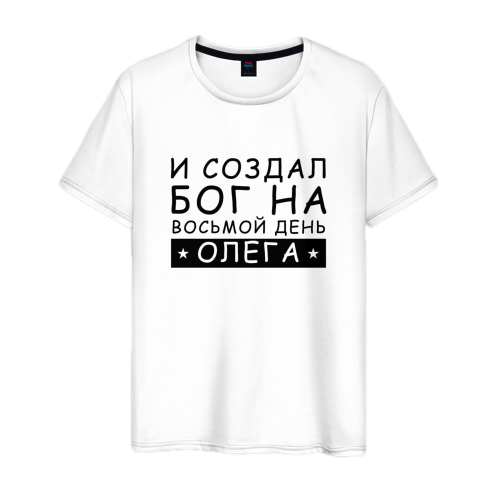
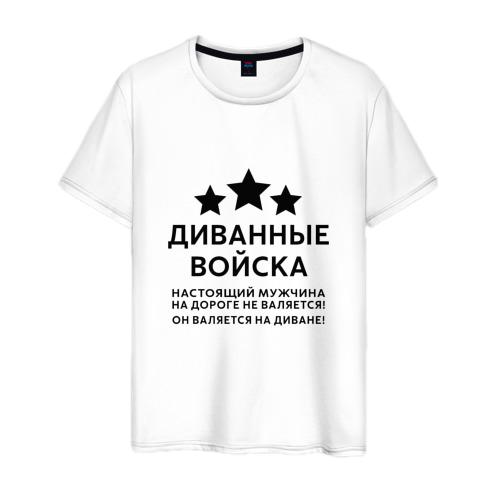
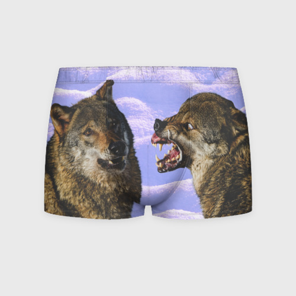
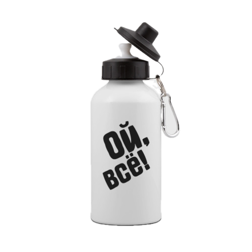
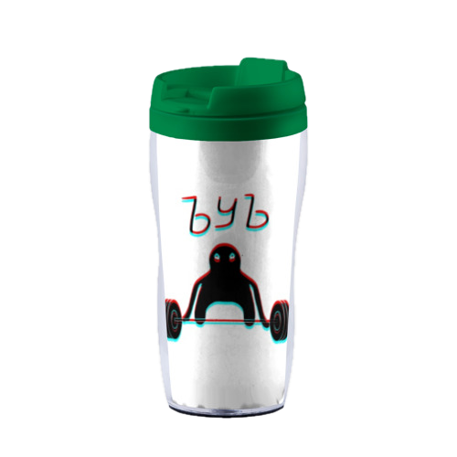
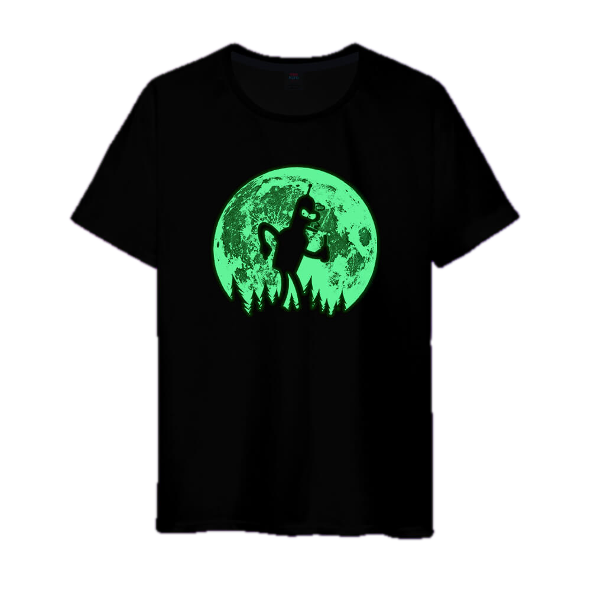
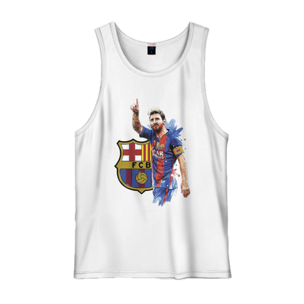

Футболка: "Олег"
Классическая футболка прямого кроя с коротким рукавом для мужчин из мягкого хлопка плотностью
140-160 г/м2. Базовая универсальная модель на каждый день, для прогулок, спорта, дома. Двойная
прострочка швов делает изделие более износостойким.

Футболка: "Диванные войска"
Классическая футболка прямого кроя с коротким рукавом для мужчин из мягкого хлопка плотностью
140-160 г/м2. Базовая универсальная модель на каждый день, для прогулок, спорта, дома. Двойная
прострочка швов делает изделие более износостойким.

Трусы: "Волки"
Трусы 3D сшиты в стиле классических боксеров из комфортной ткани смешанного состава:
за счет хлопка они мягкие и кожа в них дышит, а из-за синтетических волокон — тянутся и держат форму.
Принт наносится по всей поверхности ткани, впечатывается в материал и сохраняет яркость и
четкость даже спустя сотни стирок.

Бутылка: "Ой, всё"
Вместительная спортивная бутылка с удобным горлышком и двумя комплектами крышек.
Можно заказать со своим дизайном.

Набор посуды: "Shy Duck"
Кружка изготовлена из высококачественной белой керамики. Тарелка изготовлена из фарфора.
Принт наносится на бока кружки: два изображения или только с одной стороны. На тарелку принт
наносится на плоскую часть.

Термокружка: "ЪУЪ glitch"
Термокружка-непроливайка с герметичной крышкой и двойными пластиковыми стенками. Сохраняет тепло
напитка в течение часа и не позволяет жидкости проливаться во время поездок и прогулок. Рисунок
можно менять под свое настроение, стоит только раскрутить крышку и заменить картинку на другую.
Можно сделать со своим дизайном.

Светящаяся футболка: "Бендер и Луна"
Модель выполнена из мягкого приятного трикотажа из 100% хлопка, поэтому отлично подходит для
повседневной носки. Футболка представлена в полном размерном ряду. Модель с коротким рукавом,
горловина обработана эластичной рибаной. Принт наносится современным инновационным способом
переноса на полотно для создания ярких и долговечных изображений. Светящиеся в темноте футболки
быстро и легко зарядить. Для этого вам потребуется наиболее яркий источник света, но подойдет даже
фонарик, если ничего другого нет под рукой. То есть чем ярче будет источник света, которым
заряжается футболка, тем дольше и ярче она будет светиться.

Футболка: "Месси"
Мужская майка изготовлена из мягкого, дышащего, приятного для тела хлопка. Принт наносится
современным инновационным способом печати путем переноса непосредственно на полотно для
создания ярких и долговечных изображений.